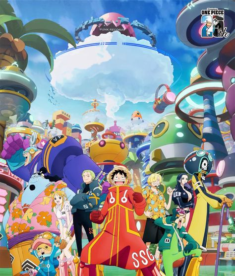
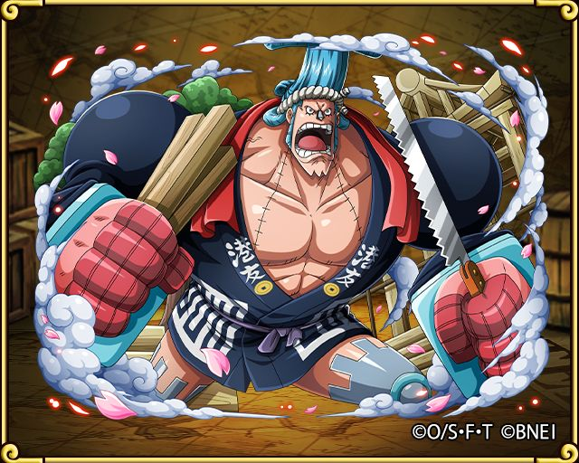

Straw Hat's Pirate

Monkey D. Luffy
Roronoa Zoro
Nami
Usopp
Sanji
Tony Tony Chopper
Nico Robin
Franky

Franky adalah tukang kapal (shipwright) kru Topi Jerami, seorang cyborg yang ahli
dalam teknologi dan konstruksi. Franky bergabung dengan kru setelah pertemuan mereka
di Water 7, di mana dia awalnya menjadi musuh mereka. Mimpinya adalah membuat kapal
yang bisa berlayar mengarungi seluruh lautan dunia, dan kapal tersebut adalah
Thousand Sunny, kapal utama Topi Jerami setelah Going Merry.
Franky lahir di South Blue, namun dia diadopsi oleh Tom, seorang pembuat kapal
legendaris yang menciptakan kapal Roger, Oro Jackson. Franky menghabiskan masa
kecilnya di Water 7, di mana dia belajar membuat kapal dan menjadi ahli dalam
teknologi. Setelah mengalami kecelakaan serius, dia mengubah dirinya menjadi cyborg
dengan kemampuan luar biasa, termasuk senjata tersembunyi dan kekuatan fisik yang
besar.
Sebagai tukang kapal, Franky adalah otak di balik perawatan dan modifikasi Thousand
Sunny. Kapal ini dilengkapi dengan berbagai fitur canggih, termasuk meriam, sistem
navigasi, dan bahkan mesin cola yang menjadi sumber tenaga Franky. Selain kemampuan
mekanisnya, Franky juga merupakan petarung kuat yang mengandalkan tubuh cyborg-nya
dalam pertempuran.
Franky dikenal sebagai karakter yang energik dan eksentrik, sering kali melakukan
pose aneh dan menyebut dirinya sebagai "super." Meskipun sifatnya yang keras dan
sedikit liar, Franky sangat peduli terhadap krunya dan rela melakukan apa saja untuk
melindungi mereka. Loyalitasnya kepada kru diperlihatkan ketika dia berani melawan
Pemerintah Dunia demi menyelamatkan Robin dan kru lainnya di Enies Lobby.
Brook
Jinbe